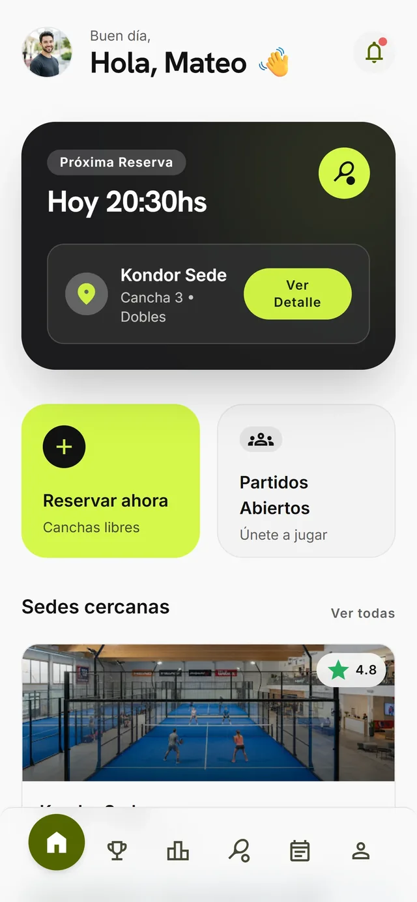
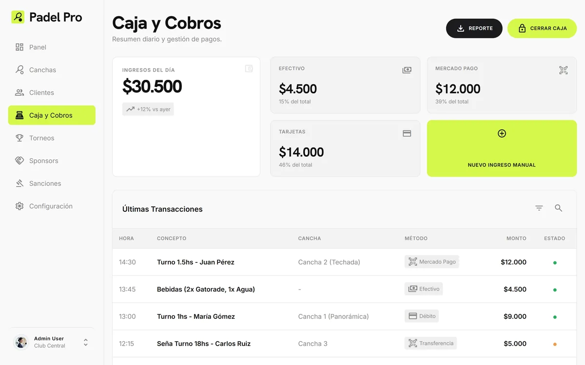
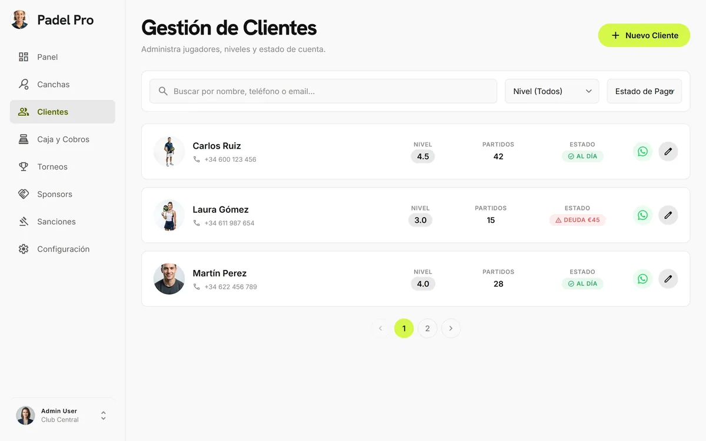

Plataforma de reservas
Padel Hub Mendoza
Del mensaje al club a la cancha reservada en cuatro pasos, y una sola vista del día para quien lo gestiona.



Resumen del proyecto
- Industria
- Deporte y reservas
- Producto
- Plataforma web responsive: app del jugador y panel del club
- Mi rol
- UX/UI y desarrollo front-end
- Responsabilidades
- Flujos de reserva, experiencia del jugador y del club, tokens, implementación en React y QA
- Equipo
- Dos personas: Lucía Miranda y Álvaro González, que escribió la base inicial y el módulo de torneos
- Duración
- Agosto – octubre 2026
- Herramientas
- React, Vite, Tailwind CSS, Supabase
- Estado
- Demo funcional con datos de ejemplo. El pago está simulado y todavía no hay piloto con un club
En la demo el producto aparece con su nombre de trabajo, Padel Pro. Los torneos necesitan el backend conectado, por eso ahí se ven vacíos.
En un minuto
Problema
Reservas, inscripciones y demoras se resolvían por WhatsApp, de a una persona. El jugador no sabía qué estaba libre y el club llevaba el mismo día por duplicado.
Enfoque
Dos experiencias conectadas con una misma fuente de disponibilidad. El jugador toma una decisión por paso; el club ve quién juega, quién pagó y qué canchas están bloqueadas en la misma grilla.
Resultado
25 pantallas construidas en React, tema claro y oscuro, y una demo que cualquiera puede usar sin cuenta. Lo que falta está tan a la vista como lo construido.
01El desafío
El pádel en Mendoza se organiza por WhatsApp.
Los sistemas que se usan hoy fallan justo en lo que pasa en una cancha real: el club con dos sedes carga todo dos veces, la cancha del fondo no tiene señal y cada demora se avisa uno por uno.
Jugadores
- Preguntan por mensaje si quedaron inscriptos
- No encuentran con quién jugar si van solos
- Buscan las fotos del torneo en carpetas compartidas por chat
Clubes
- Arman el fixture a mano en una planilla
- Duplican datos entre sedes
- Persiguen pagos y confirmaciones
Restricciones
- Se usa en la cancha: mala señal, de noche
- Clubes chicos y clubes con varias sedes
- Pagos con Mercado Pago y transferencia
02Investigación y descubrimiento
Dos preguntas, un producto.
El jugador pregunta “¿cuándo juego y con quién?”. El club, “¿cómo organizo sin el ida y vuelta?”. Lo que hace uno alimenta al otro.
Evidencia
Lo que se sabía
- Reservas y cambios se resuelven por mensaje
- Cada club aplica sus criterios para armar categorías
- Pedir el pago completo frena la reserva; no pedir nada deja canchas vacías
Supuestos
Lo que se diseñó como hipótesis
- Una seña del 30% equilibra a las dos partes
- Mostrar el nivel hace que valga la pena sumarse a un partido
- La gente abre la app para ver su próxima reserva
Pendiente
Lo que falta confirmar con uso real
- Cuánto se tarda en reservar, con jugadores reales
- El panel con datos reales de un organizador
- Un piloto con un club antes de abrirla
03Recorridos y flujos
Una decisión por paso.
Paso 1
Día y canchaTechada o descubierta, cristal o muroPaso 2
Turno libreLos ocupados se atenúan, no se ocultanPaso 3
ExtrasPaletas y pelotas, opcionalPaso 4
Seña del 30%El resto se abona en el club, con el monto exactoEn el club
Aparece en la grillaJugador, nivel y estado de pago
Dos arquitecturas de información
| Experiencia | Secciones | Lo primero que se ve |
|---|---|---|
| Jugador, celular primero | Inicio, Torneos, Ranking, Partidos, Mis reservas, Perfil | La próxima reserva: sede, cancha y hora |
| Club, escritorio primero | Panel, Canchas, Clientes, Caja, Torneos, Sponsors, Sanciones, Configuración | Ocupación, ingresos y próximos turnos |
Excepciones
| Situación | Respuesta |
|---|---|
| El turno ya está ocupado | Queda visible y atenuado, para entender la disponibilidad real |
| Una cancha está en mantenimiento | Un bloque pleno en la grilla, distinto de una reserva |
| El jugador sólo pagó la seña | “Seña pagada” y “total pagado” tienen su propia etiqueta |
| Un partido se demora | Se reprograman los turnos siguientes y se avisa a los jugadores |
| Un cliente debe | La deuda se lee junto al nombre, con contacto directo por WhatsApp |
04Exploración de diseño
De pantallas estáticas a un sistema que funciona.
El proyecto empezó en agosto de 2026 con un conjunto de pantallas estáticas. Desde ahí consolidamos un único set de tokens, reconstruimos cada pantalla en React y corregimos lo que sólo aparece al usarla.
- Menús tapados por tarjetas y un error en la inscripción, encontrados en un QA general
- Fechas de torneo mostradas un día antes por la zona horaria
- Notificaciones y configuración rediseñadas como menús, y modo oscuro corregido
Problema
Reservas que no se presentan
Cobrar todo frena la reserva; no cobrar nada deja canchas vacías.
Decisión
Seña del 30% online
El club asegura el turno y el jugador no adelanta todo. La pantalla separa total, seña y saldo.
Problema
Partidos desparejos
Sumarse a un partido de otro nivel arruina el juego para cuatro.
Decisión
Nivel requerido en cada tarjeta
Rango de nivel, precio por jugador y cuántos faltan, con filtros por “mi nivel”, hoy y mañana.
Problema
Abrir la app sólo para recordar
La pregunta más frecuente es “¿cuándo juego?”.
Decisión
La próxima reserva, protagonista
El inicio abre con ella y sigue con dos accesos grandes: reservar o sumarse a un partido.
Problema
Cada club ordena distinto
En la práctica cada uno aplica sus criterios.
Decisión
Doble ranking
El club elige el ranking oficial o el propio.
Qué costó: dos fuentes para explicarle al jugador.
05Sistema de diseño
El lima marca qué hacer. El resto queda en silencio.
Un mismo set de tokens mueve las dos experiencias y los dos temas. Los nombres describen la función: el tema oscuro cambia valores, no componentes.
Color
- primary-container
#D4F84A - primary
#536600 - text-primary
#111111 - on-surface-variant
#454935 - surface
#F9F9F9 - status-ok
#27AE60 - status-pending
#F2994A - status-error
#EB5757
Auditoría de contraste
| Combinación | Muestra | Relación | Resultado |
|---|---|---|---|
| Tinta sobre lima (acción principal) | 15,58:1 | AAA | |
| Oliva sobre superficie (enlaces) | 6,10:1 | AA | |
| Texto secundario sobre superficie | 3,28:1 | Sólo texto grande e íconos Reemplazar por on-surface-variant | |
| Estado “ok” sobre blanco | 2,87:1 | No apto para texto Acompañarlo con ícono y texto más oscuro |
Tipografía y componentes
- Hanken Grotesk para títulos, Inter para lectura
- Turno: libre, seleccionado, ocupado, con promoción. Cuatro estados que no dependen sólo del color
- Barra fija al pie con el monto y la acción principal
- Grilla de canchas: una columna por cancha, una fila por media hora
06Solución final
El jugador en cuatro pasos, el club en una vista.
Próxima reserva Y dos formas de jugar. 
Horario Libre, ocupado y elegido de un vistazo. 
Resumen Total, seña y lo que se paga en el club. 
Partidos abiertos Nivel, precio y lugares. 
Mis reservas Invitar desde la misma tarjeta.





07Implementación y colaboración
Design QA sobre el producto andando.
Estar de los dos lados hizo que un ajuste de diseño y su implementación fueran la misma conversación, y muchas veces el mismo commit.
- React, Vite y Tailwind, con tokens como variables CSS para claro y oscuro
- Cuentas, base de datos y permisos por rol en Supabase: 12 migraciones en el repositorio
- Modo demo por defecto, para que cualquiera revise el producto sin cuenta ni backend
Construido
- Reservas con seña, partidos abiertos por nivel, chat del partido y perfil
- Torneos: calendario, inscripción, fixture y ranking
- Club: resumen del día, grilla de canchas, clientes y caja
Todavía no construido
- Cobro real con Mercado Pago (está simulado)
- Carga de resultados sin conexión
- Avisos por WhatsApp
08Resultados e impacto
Un producto que cualquiera puede probar.
- 2experiencias conectadas: jugador y club
- 25pantallas llevadas a React
- 4pasos para reservar una cancha
- 2temas con los mismos componentes
No hay métricas de uso: la plataforma todavía no se probó con un club.
09Aprendizajes y próximos pasos
Pensar en la cancha, no en la pantalla.
Aprendizajes
- Lo que hace fracasar estas plataformas (señal, demoras, varias sedes) no aparece en un mockup
- Ser explícita sobre qué está hecho y qué no genera confianza con el cliente
- Un modo demo es una herramienta de diseño: deja que otro encuentre el problema
Próximos pasos
- Testear el flujo de reserva con jugadores y medir cuánto tardan
- Probarla en un torneo real antes de abrirla
- Corregir el contraste del texto secundario y unificar el nombre Padel Hub en la interfaz